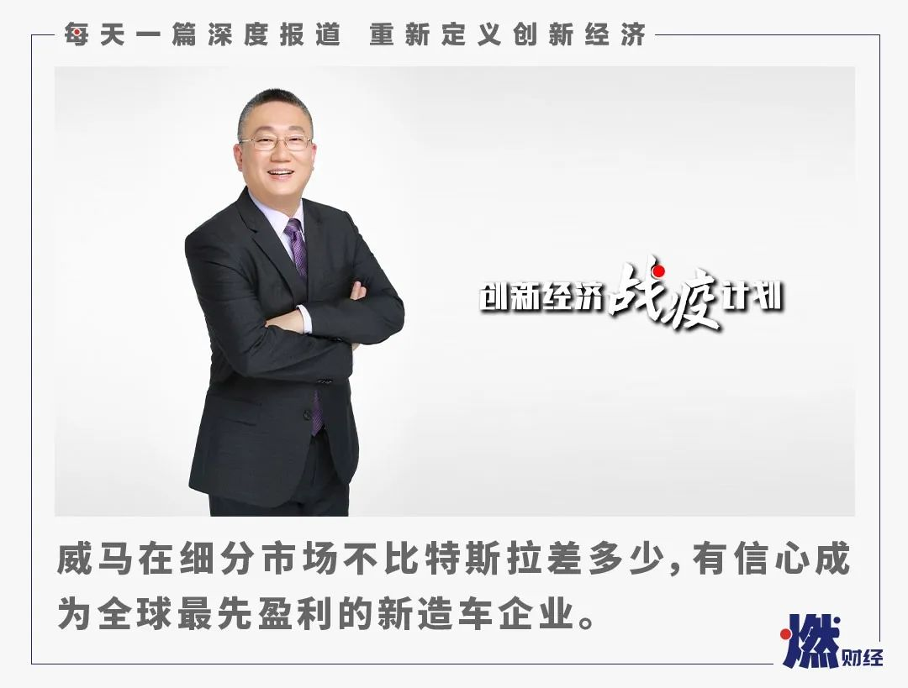
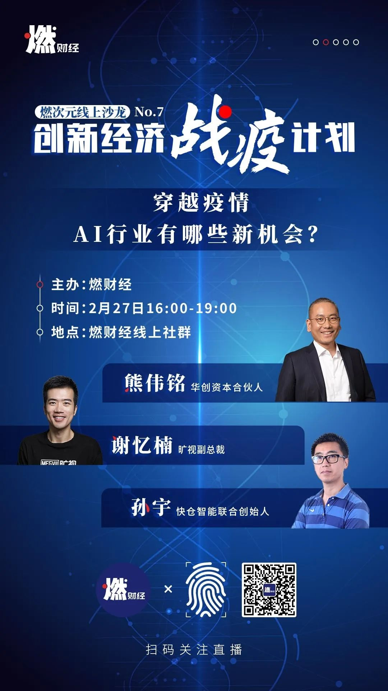

沄柏资本鲍毅：造车新势力仅有一两家能存活，资本不要盲目投入
原文链接 备份链接 燃财经（ID:rancaijing）原创 作者 | 孔明明 编辑 | 周昶帆 过去几年，有上百家新能源汽车企业成立，平均每家背后都站着数十位投资人，融资的速度和金额达到顶峰，每个人都在梦想找到“中国的特斯拉”。 而车市 …

燃财经（ID:rancaijing）原创
作者 | 赵磊
编辑 | 周昶帆
突如其来的疫情对汽车行业造成剧烈冲击，业内机构盖世汽车的最新调研显示，有76%的受访者表示，在目前的情况下会调整购车计划，取消或延期。而对于本就低迷的新能源汽车行业来说，更是雪上加霜。
2月26日，燃财经举办线上沙龙，主题聚焦于造车行业，威马汽车创始人、董事长、CEO沈晖，沄柏资本主席鲍毅进行了主题分享，并和燃财经总编辑贺树龙做了对话。
“虽然短期很困难，但长期来说我们还是要对新能源汽车抱有信心。”沈晖比较乐观，他坚信新能源汽车是趋势，也是未来。

•有76%的受访者表示在目前的情况下会调整购车计划，取消或延期。车展推迟举办，新车发布受影响；
•疫情过后私家车的消费会迎来报复性的增长，同时对于车内的一些健康相关的功能要求也会更多；
•强调线上能力，推行无接触服务，对生产流程进行数字化部署；
•如果你还没有真正批量生产，那么起码要交付5千到1万辆，否则就会比较困难；
•特斯拉Model3来中国对整个行业是个利好，用户对新能源车的关注度会提高；
•威马有信心成为全世界第一家真正全年盈利的新造车企业，并希望跑在特斯拉前面实现盈利。
以下是沈晖在燃财经沙龙上的详细分享内容：
***疫情影响虽大***
***但不会动摇新能源汽车的基本面***
威马汽车是2015年成立的，这个名字其实有内涵，我们是中文外文同时起的，在德语里面代表“世界冠军”的意思，因为我们相信，将来智能电动新能源汽车领域的世界冠军一定会在中国诞生。同时这个名字也暗含了我们的核心理念，一是纯电动，二是智能化，威马不仅有自动驾驶能力，在智能座舱方面同样突出，只需语音，就可以一句话全搞定。
大家现在会比较关心疫情，对我们汽车行业来说，毫无疑问影响是非常大的。
首先，汽车的制造非常复杂，必须要有线下的生产基地，这对产品的质量稳定、用户体验非常关键，当然最重要的还是停产带来的成本压力。从用户端来说，汽车是消费品里最大的一个大件，完全在线上成交的几率不高，大家还是要到实体店、线下店去了解，成交的时候还有车牌、国补、地补等各种服务，都只能在线下店办理，线下门店不能开对销售服务影响非常大。
根据业内权威机构盖世汽车的一个最新调研，有76%的受访者表示在目前的情况下会调整购车计划，取消或延期；受疫情影响，北京车展的举办时间也未定，这本是一年中新车上市最多的一次活动，包括我们威马的两款新车，本打算在北京车展发布，也被打乱计划。
当然，这个危机也是机遇。因为冬天来临的时候，基础好的会活下来并且得到成长，所以我们觉得这对行业是一个升级的机会。另外，根据非典的经验，疫情过后私家车的消费会迎来报复性的增长，大家对于公共交通包括公交地铁还是有担心的，同时对于车内的一些健康相关的功能要求也会更大。
从长远的宏观层面看，新能源汽车的发展不会有大的方向性变动，这是一个国家战略，涉及到我们的能源安全；从产业升级的角度来说，我们在传统汽车领域由于发动机、变速箱技术受限，与国外的差距还比较大，所以我们一定要换个赛道，换成新能源汽车，因为在电池、电机、电控这些方面我们与国外最先进的企业是在同一起跑线上的，政府也会继续给行业很多支持。
因此，虽然短期很困难，但长期来说我们还是要对新能源汽车抱有信心。
***重视线上能力***
***推广无接触服务***
我之前在很多世界五百强企业工作过，我们当时创业的时候，从0到1不是我们最强的，但从1到1000会有一些经验，包括在整个大势很困难的时候怎么生存下来。
大家都知道现金流很重要，这是一个公司在特殊情况下生存能力的试金石，对威马来说，在度过早期融资阶段后，我们从去年开始强调精细化运营、现金流管理，天天都要讲怎么保证我们的收入，在资金产出上哪些是必须做的，哪些是可以做的，这些思考对于一个团队非常重要。
目前，很多公司都强调线上的能力，威马从第一天开始，员工分散在全国各地，我们就逐步建立线上能力，包括各种会议、审批流程，视频、音频等手段，线上的很多工具比如微信、钉钉都有在用，我们只要有一部手机，在任何地方都可以工作，从研发团队、供应链管理团队以及服务销售团队都已经习惯了线上办公。
用户服务上，我们也在推无接触服务，比如线上看车，我们在北京、上海有无接触销售，用户要试乘试驾，我们把车送到指定地点，用手机发一个特殊代码，开车、试车、还车都是无接触的；下订单后，也是把车送到用户指定地点，无接触办好牌照交给用户，大部分的流程都可以在线上完成。
除了线上办公，我们公司也很早就强调数字化，包括研发、设计，比如不同地方的设计同学都可以用AR评审不同的设计流程，我们的供应链管理、制造体系和订单体系全部都实现数字化，特别是有一套C2M系统，可以根据不同用户的需求，直接在数字化的装配线和供应链上面做到提供1500种左右的新车选配方案，平均六周就能交货。
团队管理中，我们对人员数量的管理非常重视，理念就是“人少好办事”，不管形势好坏，办事的人少，效率高，组织结构才能扁平，公司策略执行起来阻力更小，发现问题也能及时调转船头，因此在招聘中我们反复考虑需不需要招这些人，哪些是我们必需的核心能力，哪些可以对接给供应商或合作伙伴做。人少，是在这次疫情中使我们公司保持比较稳健的重要原因。
疫情带来的困难很大，在这个非常时期，我想我们作为创业者，更要唤醒体内的创业者基因。我觉得有句话是很有意思的，《红海行动》这部电影里讲的，“不要害怕它，压力会让你更专注”。我们要相信中国的经济车轮不会停止，让我们一起来为它充电。
对话沈晖：
***新造车抢的是传统汽车市场***
燃财经：经过几年的快速发展，新造车行业如今也进入了一个复杂的阶段。一方面产品陆续交付、市场接受度在上升，另一方面整个行业也面临着各种各样的问题。你认为在未来一段时间，新造车企业之间竞争的焦点是什么？什么样的企业才能跑出来？
沈晖：首先，能跑出来的一定是产品定位准的产品。我们的产品是定位在中等市场，并没有直接去做豪华车，因为在中国，乘用车最大的市场基本上都在我们目前在竞争的A级市场、A+级市场，10万到15万是中国最大的一个细分市场，所以我们第一天就切入这个市场。第二，我认为新造车企业之间没什么竞争，因为大家现在刚开始量都不算太大，只能说没有销售、没有产品的企业，目前阶段是很难活下去的，早期还OK，但是活下去的这几个能真正交付量产的企业之间，竞争其实并不重要，因为这个市场本来就不是赢者通吃，重要的是我们谁能在传统的汽车市场里抢到份额，谁就能跑出来。
燃财经：你说未来只有三家新造车企业能生存，哪三家？
沈晖：肯定有威马，第二个我认为小鹏，可能还有蔚来。只是个人想法，每个人说法不一样，反正我认为威马肯定能活下去。
燃财经：跟蔚来、小鹏、理想等竞争对手比，你认为威马的长处和不足分别是什么？
沈晖：我个人跟其他的新造车势力的创始人有一点最大的区别，我是经历过的。其实WTO打开以后，国外冲进来很多巨头做汽车，客观讲当时大众的产品以及技术跟国内的上汽比优势十分明显，但经过这么多年变化，其实上汽跟大众的产品在技术上并没有太大差距了，销量是上汽增长的更快。我们现在跟特斯拉之间比较，差距远远比不上当年上汽和大众的差距，我觉得在技术上，在我们的细分市场，我们一点不比特斯拉差，只是我们跟特斯拉比，品牌知名度比较低，渠道还没铺好，关注度还不够。
其他几家新造车公司，他们的互联网背景比我强。我们的产品更有长处，因为我们对于智能电动汽车这个世界上最复杂的智能硬件有很多年的积累，对这个复杂的工业品和消费品有很多的理解，以后我们的创新可能会快一点。但是几个对手他们都很厉害，我们的营销、品牌、流量管理都可以向他们学习，我觉得大家都在努力把这个饼做大，这几家都可以得到很大的益处。
燃财经：最近两年汽车行业比较低迷，预计今年1月和2月国内乘用车的销量下滑幅度会创近年新高，这样的背景下，新造车企业的2020年会不会也很艰难？你的判断是什么?
沈晖：这个问题我认为是肯定的，新造车企业2020年是会很艰难的，首先经济比较不确定，然后疫情之下汽车行业总体也是比较低迷，其实我们去年已经有这个判断，只是没料到疫情。这种情况下，如果你还没有真正批量生产，那么起码要交付5千到1万辆，否则就会比较困难。
但是我们也要判断两个要点，一个是赢者通吃不会在这个行业出现，第二个，资源肯定会向头部企业集中，所以头部企业还是有一定的优势，冲到新的高峰，因为整个新能源市场也在快速增长中。
燃财经：聊起新造车，槽点总是不断，过去一年新造车的负面新闻几乎天天有。你认为还需要多久新造车的充电、续航、安全、价格等等痛点才能被解决？
沈晖：首先，我觉得智能电动汽车是个新的赛道，弯道超车是不可能的，弯道只会翻车。新的赛道、新的行业，肯定是有各种各样的问题，我觉得互联网时代，用户有什么问题我们可以及时看到，能跟能改是个好事情。包括新的应用场景，以及新的生态里面的充电、续航、安全和价格，这些问题反映出来，我们才能及时解决，所以我觉得，我们有很多问题，只要面对，愿意投入资源到生态上，愿意改还是可以的。
***特斯拉进入中国利大于弊***
燃财经：聊聊特斯拉吧。过去一年，特斯拉业务进展飞速，在中国市场更是大展拳脚，最近股价飙升、市值一度突破1600亿美元，成为全球范围内仅次于丰田的第二大汽车公司。在这个来势汹汹的对手身上，你看到的是什么？威马在哪些地方需要向特斯拉学习？
沈晖：这是个很好的问题，特斯拉我们一直在关注，是我们学习的对象。首先他们All in纯电动汽车我觉得是非常对的，这个技术路径很正确，并且证明了智能纯电动汽车的正确性。第二，他们对于充电这个生态的建设是有一定道理的，虽然大家一般不敢随便做，因为充电桩体验是好，但资产比较重。
我们威马要学习什么呢？首先创始人要向马斯克学习，他们的基本面一度在改善，虽然很多人觉得他怎么还没盈利，但是实际上他的产品越做越好，产品矩阵越来越丰富，同时毛利率在不断改善，在技术方面，自动驾驶和智能座舱也进展不错，还有他们在电子方面的一些布局，我们也都在关注。但我觉得要学习他们把产品做好，要在他们进来之前先自己立稳脚跟，这个非常重要。
燃财经：不少人认为特斯拉Model3的国产化对其他新造车企业来说就是“狼来了”，你认同吗？威马面对特斯拉的竞争策略是什么？
沈晖：我认为Model3对其他汽车企业没有什么问题。首先，特斯拉Model3来中国对整个行业是个利好，因为我们新能源汽车在整个乘用车市场的比例还是比较低的，中汽协统计，去年中国一共有2500多万的新车销售，新能源车才120万。我们自己可能不觉得，其实普通老百姓对新能源并不了解。特斯拉这个网红来了以后，用户对新能源车的关注度会提高。
竞争策略第一是产品要做好快速卡位，在我们这个主流细分市场，将来肯定不可能一家通吃，还是共同发展，汽车产品由于太复杂，它满足用户的需求面太广，很难有一款产品满足所有用户绝大部分需求。所以我们认为，利好的情况下，我们要把产品做好，在我们的细分市场里做成爆款。
燃财经：特斯拉进入国内对行业有利好，不过在具体产品上，Model3对同一价格区间的杀伤力很大，是不是意味着这一区间的国内新造车企业受到的威胁是比较大的？
沈晖：我觉得这个杀伤力其实还好。在这个细分市场里，Model3并没有真正降价，这是行业里常用的惯例，就是通过减配，第一个是减了两个很重要的配置，第二，充电方面的服务也拉掉了，这据说值8000块。整体还是利大于弊，整个行业受关注度更高，这个蛋糕会做得更大，大家都受益，抢的还是汽油车的市场。
*****威马有信心成为全球第一家盈利车企*****
燃财经：威马是2019年国内造车新势力单车年度交付量第一名（领先蔚来、小鹏），还是累计交付量的第二名（仅次于蔚来），跟成绩和地位比起来，威马在声量和品牌上似乎有点“低调”。你认为取得这些成绩，威马做对了什么？“低调”是主动选择还是被动状态？
沈晖：我们主要投入都是在围绕产品，围绕着产品创造，主要是设计研发；还有围绕着产品制造，主要是供应链管理和工厂管理，我们是所有的新造车企业里唯一一家有自己的整车工厂，自己的电池包工厂，并且有生产资质的；还有围绕产品运营，我们怎么通过渠道去服务用户。
我们团队还是工程师思维比较强，产品思维比较强。好的一面是讲的东西基本都能做到，但就是因为这样，我们通常先做了才讲，给人感觉就是很低调，这个可能是工程师文化比较重的一个表现吧。我们也确实需要让更多人了解我们的品牌，知道我们产品的优势，这可能是低调不太好的一面吧。
燃财经：我们关注到威马最近推出了VR看车和直播卖车，有人会认为这是车厂在玩噱头，目前这些“无接触卖车”的方式尝试的效果怎么样？你认为线上卖车未来会成为主流的方式吗？
沈晖：我们这个无接触卖车刚开始效果还是相当好的，很多用户可以从线上通过VR、直播了解产品，如果真的需要试乘试驾，也有无接触的方式，如果最后成交，也有无接触的方式，目前从短期看还是不错的。我认为线上卖车，将来还是很重要，短期之内不一定成为主流，但我们的目标用户是新青年，年轻一代本身就很熟悉线上，所以线上体验车了解车也是非常重要的一个方式，肯定会有一个很大的提升空间。
燃财经：另外，威马还推出了“硬件+服务”的“威马直购”新零售模式，目前取得的成绩怎么样？你认为新零售会逐渐成为新能源车企的主推动力吗？
沈晖：硬件加服务的威马直购的新零售方式，推出以后反响很不错，目前已经有几千单的订单量，高意向用户已经破了一万多。我觉得这是一个很特别的新零售模式，它不是零首付，那只是硬件分期。我们这个是硬件加服务，用户跟威马直接发生业务关系，以及后续的服务粘性，一直跟用户之间有很多互动。我觉得这是一个真正跑得通的模式，能成为车企的助推力。
燃财经：除了造车卖车之外，威马也在推进出行服务，目前进展如何？有人认为新造车企业是因为卖不掉车才玩出行，事实是这样吗？出行业务未来对新造车企业的重要性有多高？
沈晖：这个我不同意，我们只做了一点，并不是我们主要的精力。我们做出行有两大原因，一个是我们坚信用于出行的产品是跟我们私家车不一样的，但是没有足够的数据跟足够的了解，我们并不清楚做出行需要什么产品、什么场景、需要哪些功能，所以我们做出行来积累这方面数据，帮助我们真正地满足用户对于出行跟私家车的差异化需求。
第二个，我们的品牌毫无疑问是很新的，18年9月才开始交车，很多出行露出的手段会让用户体验到，不管是网约车，还是租的自驾车，对我们转换成私家车用户是非常重要的。
燃财经：烧钱和亏损是新造车企业商业模式上最被诟病的一点，威马汽车迄今为止烧掉了多少钱？按照你们的规划，还需要烧多少钱？达到哪些条件才能实现盈利？
沈晖：首先，我们烧了多少钱就不透露了，因为我们肯定排不上前两名，我们是排得比较靠后的。目前来讲，我们很有信心成为全世界第一家真正全年盈利的新造车企业，我们希望跑在特斯拉前面，也坚信能做到。
这就是为什么我刚才讲精细化运营的能力，因为你长期在1到1000的公司里边做，天天就面对着基本面，这个基本面就是几个要点，现金流管理、毛利率的管理、净利率的管理、销售增长的管理、产品的管理，面对这些东西，这些反而是我们的强项，所以我们很有信心。
*“创新经济战疫计划”相关的深度报道和沙龙实录可点击公众号菜单“战疫计划”阅读。




你尝试了哪些网上购车的方式？体验如何？
欢迎在评论区留下你的评论，我们会在点赞前三（超过20个）的评论里挑选一位网友，送出爱奇艺月卡一张****。原创文章转载请点击公众号菜单“转载合作”。
一手资讯/硬核报告/每日红包/线下活动！就差你了！快加微信rancaijing02回复“读者”一键上车！


燃财经工作室
点个在看吧😘
长按二维码向我转账
点个在看吧😘
受苹果公司新规定影响，微信 iOS 版的赞赏功能被关闭，可通过二维码转账支持公众号。
原文链接 备份链接 燃财经（ID:rancaijing）原创 作者 | 孔明明 编辑 | 周昶帆 过去几年，有上百家新能源汽车企业成立，平均每家背后都站着数十位投资人，融资的速度和金额达到顶峰，每个人都在梦想找到“中国的特斯拉”。 而车市 …
原文链接 备份链接 《创新经济战疫计划》，是燃财经在新型肺炎疫情期间推出的特别栏目，关注创新经济企业遇到的新难题、商讨应该采取的新对策，希望能够帮助中小企业一起战胜挑战、把握机会。 作者 | 赵磊 编辑 | 周昶帆 三个微信群，上千条语 …
原文链接 备份链接 作者：郭儒逸 来源：*商业人物*（ID：*biz-leaders）* **火热 ** 周二晚上七点，宝马在天猫旗舰店的第一场夜场直播准时开始。两位销售人员戴着口罩，西装笔挺，手里各拿着一只公仔，冲着镜头聊了起来。 直播 …
原文链接 备份链接 燃财经（ID:rancaijing）原创 作者 | 金玙璠 编辑 | 魏佳 “如果不是因为疫情，我都忘了自己手机里还有摩拜APP，账户里还剩几十块钱余额。” 随着春节假期结束，返工大幕逐渐拉开，越来越多的人从各地返回所 …
原文链接 备份链接 《创新经济战疫计划》，是燃财经在新型肺炎疫情期间推出的特别栏目，关注创新经济企业遇到的新难题、商讨应该采取的新对策，希望能够帮助中小企业一起战胜挑战、把握机会。 作者 | 唐亚华 编辑 | 魏佳 疫情下的健身行业，正在 …